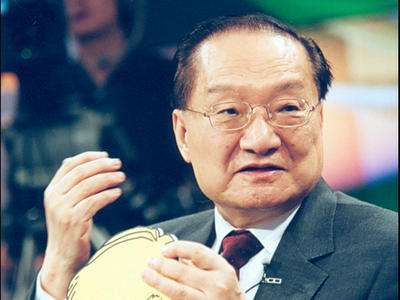
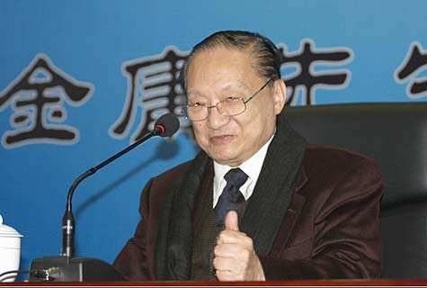
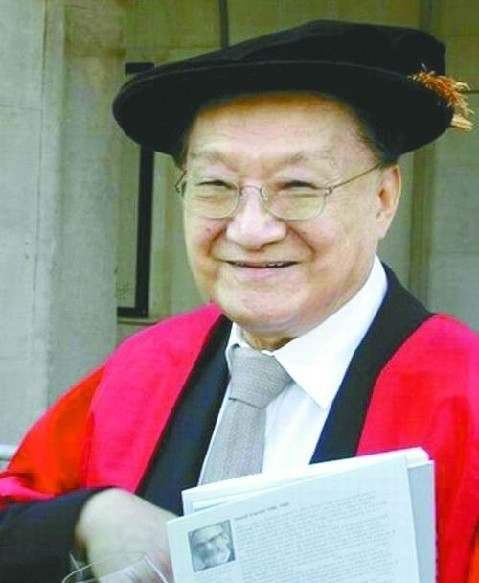
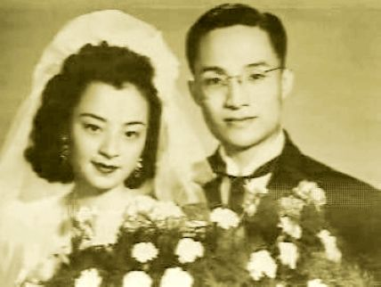
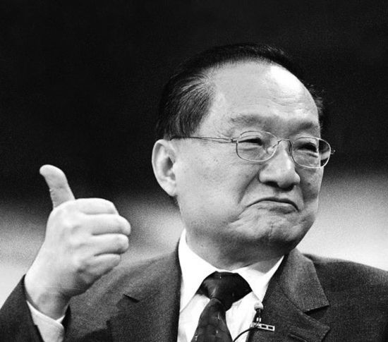

人物经历
金庸出自浙江海宁查氏，其家为书香门第，世居海宁县袁花镇，金庸本人是查升之孙查揆的后裔，出生于农历甲子年二月初六（公元1924年3月10日）。
1929年5月入读家乡海宁县袁花镇小学。
1936年入嘉兴一中读初中，离开家乡。
1937年日军入侵，因战事而随学校辗转余杭、临安、丽水等地，后1938年于浙江省立联合高中初中部就读。
1939年读初中三年级的他与同学合编了一本指导学生升初中的参考书——《给投考初中者》。这是此类型书籍首次在中国出版，也是金庸出版的第一本书，收效不凡。
1941年因在壁报上写讽刺训导主任投降主义的文章《阿丽丝漫游记》被其开除，校长张印通介绍他转学去了衢州。
1942年自浙江省衢州中学毕业。
1944年考入重庆中央政治大学外交系，因对校内学生党员行为不满而向校方投诉，反被退学。后在中央图书馆挂职，阅读大量书籍。  金庸
1945年抗战胜利后返乡，曾在杭州《东南日报》暂任外勤记者。
1946年赴上海东吴大学法学院（后并入华东政法学院）插班修习国际法课程，1948年毕业。
1946年秋，金庸进入上海《大公报》任国际电讯翻译。
1948年调往香港分社。
1950年曾赴北京到中共外交部求职，后重入《大公报》。
1952年调入《新晚报》编辑副刊，并写出《绝代佳人》、《兰花花》等电影剧本。期间与同事梁羽生相识为友。而后总编辑罗孚安排查与梁写武侠小说于副刊连载，梁羽生编写《龙虎斗京华》，查良镛以金庸为笔名写《书剑恩仇录》，引起轰动，顿时金梁齐名。
1956年，与同写武侠小说的梁羽生和百剑堂主在报上开设专栏《三剑楼随笔》，三人合写随笔，给“新派武侠”留下了一段历史见证。
1956年在《香港商报》全年连载《碧血剑》。1959年于自办的《明报》上连载《神雕侠侣》。
1953年至1958年期间，他曾以林欢作笔名，为长城电影公司编写剧本，其中《绝代佳人》获中华人民共和国文化部金章奖。同年与导演合作过两部电影，与程步高合导《有女怀春》及胡小峰合导《王老虎抢亲》。也曾以姚馥兰为笔名撰写电影评论，还为电影歌曲填词。
1959年，金庸等人于香港创办《明报》，后来推出包括《明报晚报》  金庸 、《明报月刊》和《明报周刊》、及马来西亚《新明日报》系列报刊，金庸还成立了明报出版社与明窗出版社。
1991年1月23日注册成立“明报企业有限公司”，当年3月22日在香港联合交易所上市。明报集团1991年度的盈利接近一亿元，1991年明报集团香港上市后，他退出报业管理层，于是他从此去周游列国、教书、静修、游山玩水、研经，他在1991年的《资本杂志》的《九十年代香港华人亿万富豪榜》名列中排第64位，他亦被誉为文人致富的典型例子。
1973年春，金庸应台湾地方政府之邀前往台湾，并与蒋经国见面会谈。文革结束后，金庸在1981年与1984年来到中国大陆访问，并先后在北京与邓小平和胡耀邦会谈。
1985年香港特别行政区基本法起草委员会宣告成立，金庸作为委员之一，任基本法政治体制起草小组的港方负责人兼经济体制起草小组成员。
1988年，金庸与查济民提出了“政制协调方案”（又称“双查方案”、主流方案）。
1989年金庸去基本法草委、咨委职务，结束了从政生涯。同年在《明报》创办三十年庆祝茶会上宣布卸下社长职务，只担任集团董事长。
1991年明报企业上市，金庸任董事长并签订三年服务合约，与于品海达成协议由智才技术性收购明报企业。
1993年两会期间赴北京访问，并获江泽民接见。同年4月宣布辞去明报企业董事局主席职务，改任名誉主席，更将明报集团售予于品海，宣布全面退休。
1994年金庸返乡参加嘉兴一中90周年校庆并于嘉兴高专兴建“金庸图书馆”。图书馆落成后再斥资1400万在西湖兴建“云松书舍”，供个人藏书、写作和与文友交往雅集之用。  金庸
1996年秋当“云松书舍”落成后，金庸改变初衷，毅然捐出斥巨资兴建的书舍，现已成为杭州的新旅游景点，内藏金庸作品及手迹陈列室等。
20世纪70年代至80年代，担任香港廉政公署市民咨询委员会召集人、法律改革委员会委员。
1985年至1989年，担任香港基本法起草委员会委员、政治体制小组负责人，香港基本法咨询委员会执行委员会委员。
1995年，担任香港特别行政区筹委会委员。
1996年至1997年，担任全国人大常委香港筹委会委员。
2005年，剑桥大学授予金庸荣誉文学博士名衔。
2009年9月，被聘为中国作协第七届全国委员会名誉副主席。
2010年，英国剑桥大学授予金庸荣誉院士和哲学博士学位 。
2011年，国立清华大学授予金庸名誉博士学位院士。
2014年3月10日是金庸的九十大寿，于是各个领域纷纷为金庸先生庆生，有武侠迷手抄840万字贺寿。
2015年，金庸授权北京市西城区非遗保护中心，将《鹿鼎记》改编为评书，由“连派评书”唯一继承人连丽如及其弟子播讲。
个人生活
感情婚姻
1948年与杜治芬结婚，后离婚，1953年再娶  ，第二任妻子名为朱玫，新闻记者出身，生二子二女。
1976年，金庸与朱玫感情破裂，主动提出离婚，并娶年轻二十九年的林乐怡为妻，金庸迷称秀丽娴雅的林乐怡为“小龙女”，二人一直恩爱至今。
2015年3月10日，金庸庆祝91岁的生日。
家庭情况
金庸共有四个子女，两男两女。
| 长子 | 查传侠 | 19岁为情自缢 |
| 次子 | 查传倜 | 最像金庸 |
| 大女儿 | 查传诗 | 小龙女原型 |
| 小女儿 | 查传讷 | 从树仁书院毕业 |
主要作品
小说作品
其他作品
改编影视
电影
| 影片名称 | 上映年份 | 制片方 | 导演 | 主要演员 |
| 飞狐外传 | 1980年 | 邵氏电影公司 | 张彻 | 钱小豪，黄敏仪，郭追，鹿峰，江生 |
| 1984年 | 邵氏电影公司 | 刘仕裕 | 黄日华，惠英红，戴良纯，万梓良，梁家仁 | |
| 1993年 | 嘉禾电影公司 | 潘文杰 | 黎明，李嘉欣，张敏，卢伟义 | |
| 雪山飞狐 | 1964年 | 峨嵋电影公司 | 李化 | 江汉，欧嘉慧，上官玉 |
| 连城诀 | 1980年 | 邵氏电影公司 | 牟敦芾 | 吴元俊，白彪，廖丽玲 |
| 天龙八部 | 1977年 | 邵氏电影公司 | 鲍学礼 | 李修贤，恬妮，林珍奇 |
| 1982年 | 新世纪电影公司 | 萧笙 | 徐少强，汤镇业，黄日华 | |
| 天龙八部之天山童姥 | 1994年 | 永盛电影公司 | 钱永强 | 林青霞，巩俐 |
| 射雕英雄传 | 1958年 | 峨嵋电影公司 | 胡鹏 | 曹达华，容小意 |
| 1977年 | 邵氏电影公司 | 张彻 | 傅声，恬妞，李艺民 | |
| 东成西就 | 1993年 | 泽东电影公司 | 刘镇伟 | 张国荣，梁朝伟 |
| 东邪西毒 | 1994年 | 学者电影公司 | 王家卫 | 张国荣，梁家辉 |
| 鹿鼎记 | 1983年 | 邵氏电影公司 | 华山 | 汪禹，刘家辉 |
| 1992年 | 寰亚电影公司 | 王晶 | 周星驰，温兆伦 | |
| 笑傲江湖 | 1978年 | 邵氏电影公司 | 孙仲 | 汪禹，施思 |
| 1990年 | 金公主电影公司 | 胡金铨 | 许冠杰，叶童，张敏 | |
| 笑傲江湖Ⅱ东方不败 | 1992年 | 金公主电影公司 | 程小东 | 李连杰，林青霞，关之琳，李嘉欣 |
| 东方不败风云再起 | 1993年 | 金公主电影公司 | 程小东 | 林青霞，王祖贤 |
| 书剑恩仇录 | 1960年 | 峨嵋电影公司 | 李晨风 | 张瑛，紫罗莲，容小意 |
| 1981年 | 邵氏电影公司 | 楚原 | 狄龙，白彪 | |
| 1987年 | 银都机构 | 许鞍华 | 张多福，刘佳，阿依努尔 | |
| 神雕侠侣 | 1960年 | 峨嵋电影公司 | 李化 | 谢贤，南红 |
| 杨过与小龙女 | 1982年 | 邵氏电影公司 | 张彻 | 傅声，郭追，黄淑仪 |
| 1983年 | 邵氏电影公司 | 华山 | 张国荣，翁静晶 | |
| 《古墓奇缘》、《襄阳风云》、《十六年之约》 | 2003年 | 香港无线 | ||
| 侠客行 | 1982年 | 邵氏电影公司 | 张彻 | 郭追，文雪儿 |
| 倚天屠龙记 | 1963年 | 豪华电影公司 | 张瑛 | 张瑛，白燕 |
| 1965年 | 扬子江电影公司 | 杨工良 | 林家声，陈好逑，陈宝珠 | |
| 1978年 | 邵氏电影公司 | 楚原 | 尔冬升，井莉，余安安 | |
| 魔殿屠龙 | 1984年 | 邵氏电影公司 | 楚原 | 尔冬升，万梓良，钟楚红 |
| 倚天屠龙记之魔教教主 | 1993年 | 永盛电影公司 | 王晶 | 李连杰，张敏，黎姿 |
| 碧血剑 | 1958年 | 峨嵋电影公司 | 李晨风 | 曹达华，上官筠慧，陈翠屏 |
| 1981年 | 邵氏电影公司 | 张彻 | 郭追 ，文雪儿，龙天翔 | |
| 新碧血剑 | 1993年 | 永盛电影公司 | 张海靖 | 元彪，张敏，李修贤 |
| 鸳鸯刀 | 1961年 | 峨嵋电影公司 | 李化 | 林凤，周骢 |
| 1982年 | 邵氏电影公司 | 鲁俊谷 | 惠英红，孟元文 |
电视剧
| 剧名 | 上映年份 | 制片方 | 导演 | 主要演员 |
| 雪山飞狐 | 1977年 | 香港佳视 | 卫子云，白彪，米雪，李通明 | |
| 1985年 | 香港无线 | 王天林 | 吕良伟，谢贤，周秀兰，曾华倩 | |
| 1991年 | 台湾台视 | 李朝永 | 孟飞，龚慈恩，伍宇娟 | |
| 1999年 | 香港无线 | 李添胜 | 陈锦鸿，黄日华，佘诗曼，刘晓彤 | |
| 2007年 | 香港佳艺电视台 | 王晶 | 聂远，黄秋生，朱茵，钟欣桐，安以轩 | |
| 连城诀 | 1989年 | 香港无线 | 邱家雄 / 郑兆强 | 郭晋安，黎美娴，谢宁 |
| 2004年 | 中国大陆 | 王新民 | 吴樾，何美钿，舒畅 | |
| 天龙八部 | 1982年 | 香港无线 | 萧笙 | 梁家仁，汤镇业，黄日华 |
| 1990年 | 台湾中视 | 刘俊杰 | 惠天赐，关礼杰 | |
| 1997年 | 香港无线 | 李添胜 | 黄日华，陈浩民，樊少皇 | |
| 2003年 | 中国大陆 | 周晓文 | 胡军，林志颖，高虎 | |
| 2013年 | 中国大陆 | 赖水清 | 钟汉良，金起范，韩栋 | |
| 射雕英雄传 | 1976年 | 香港佳视 | 萧笙 | 白彪，米雪，梁小龙 |
| 1983年 | 香港无线 | 王天林 | 黄日华，翁美玲，苗侨伟 | |
| 1988年 | 台湾中视 | 李朝永 | 黄文豪，陈玉莲，潘宏彬 | |
| 中神通王重阳 | 1992年 | 香港无线 | 潘嘉德 | 郑伊健，梁艺龄 |
| 射雕英雄传之九阴真经 | 1993年 | 香港无线 | 潘嘉德 | 张智霖，姜大卫，梁艺龄 |
| 射雕英雄传之南帝北丐 | 1994年 | 香港无线 | 苏万聪 | 郑伊健，魏骏杰 |
| 射雕英雄传 | 1994年 | 香港无线 | 李添胜 | 张智霖，朱茵，罗嘉良 |
| 2003年 | 大陆 | 于敏 | 李亚鹏，周迅，周杰 | |
| 2008年 | 大陆 | 李国立 | 胡歌，林依晨，袁弘 | |
| 白马啸西风 | 1979年 | 香港丽的 | 杨盼盼 | |
| 鹿鼎记 | 1977年 | 香港佳视 | 文雪儿，程思俊 | |
| 1984年 | 香港无线 | 李添胜 | 梁朝伟，刘德华 | |
| 1984年 | 台湾中视 | 周游 | 李小飞，周绍栋 | |
| 1998年 | 香港无线 | 李添胜 | 陈小春，马浚伟 | |
| 2000年 | 台湾华视 | 王晶 | 张卫健，谭耀文 | |
| 2008年 | 大陆 | 于敏 | 黄晓明，钟汉良 | |
| 2014年 | 大陆 | 赖水清 | 韩栋，魏千翔 | |
| 笑傲江湖 | 1984年 | 香港无线 | 李鼎伦 | 周润发，陈秀珠，戚美珍 |
| 1985年 | 台湾台视 | 刘立立 | 梁家仁，刘雪华，应采灵 | |
| 1996年 | 香港无线 | 李添胜 | 吕颂贤，梁艺龄，陈少霞 | |
| 2000年 | 台湾中视 | 赖水清 | 任贤齐，袁咏仪，陈德容 | |
| 2000年 | 新加坡 | 霍志揩 | 马景涛，范文芳，李锦梅 | |
| 2001年 | 大陆 | 黄健中 | 李亚鹏，许晴，苗乙乙 | |
| 2013年 | 大陆 | 胡意涓 | 霍建华，袁姗姗，杨蓉，陈乔恩 | |
| 书剑恩仇录 | 1976年 | 香港无线 | 郑少秋，汪明荃，余安安 | |
| 1984年 | 台湾台视 | 游天龙，森森，杨丽音 | ||
| 1987年 | 香港无线 | 许鞍华 | 彭文坚，任达华，罗慧娟，梁艺龄 | |
| 1992年 | 台湾台视 | 鞠觉亮 | 何家劲，沈孟生，刘雪华，傅娟 | |
| 1994年 | 大陆 | 黄海冰，王卫国，王菁华，杨雅娜 | ||
| 2002年 | 大陆 | 卫翰韬 、黄伟明 、冯柏源等 | 赵文卓，陈昭荣，关咏荷，颜颖 | |
| 2009年 | 大陆 | 谭友业、温伟基、何振华 | 乔振宇，郑少秋，周丽淇，颖儿 | |
| 神雕侠侣 | 1976年 | 香港佳视 | 萧笙 | 罗乐林，李通明 |
| 1983年 | 香港无线 | 萧笙 | 刘德华，陈玉莲 | |
| 1984年 | 台湾台视 | 何东兴 | 孟飞，潘迎紫 | |
| 1995年 | 香港无线 | 李添胜 | 古天乐，李若彤 | |
| 1998年 | 新加坡 | 马玉辉 | 李铭顺，范文芳 | |
| 1998年 | 台湾台视 | 赖水清 | 任贤齐，吴倩莲 | |
| 2006年 | 大陆 | 于敏 | 黄晓明，刘亦菲 | |
| 2014年 | 大陆 | 李慧珠 | 陈晓，陈妍希 | |
| 侠客行 | 1985年 | 台湾华视 | 莫少聪 | |
| 1989年 | 香港无线 | 伍润泉 | 梁朝伟，邓萃雯 | |
| 2001年 | 大陆 | 王新民 | 吴健，周莉 | |
| 倚天屠龙记 | 1978年 | 香港无线 | 招振强 | 郑少秋，汪明荃，赵雅芝 |
| 1984年 | 台湾台视 | 陈明华 | 刘德凯，刘玉璞，喻可欣 | |
| 1986年 | 香港无线 | 王天林 | 梁朝伟，黎美娴，邓萃雯 | |
| 1994年 | 台湾台视 | 赖水清 | 马景涛，叶童，周海媚 | |
| 2001年 | 香港无线 | 庄伟建 | 吴启华，黎姿，佘诗曼 | |
| 2003年 | 大陆 | 杨韬 | 苏有朋，贾静雯，高圆圆 | |
| 2009年 | 大陆 | 于敏 | 邓超，安以轩，刘竞 | |
| 碧血剑 | 1977年 | 香港佳视 | 陈强，文雪儿，李通明，石天 | |
| 1985年 | 香港无线 | 黄日华，庄静而，毛舜筠，苗侨伟 | ||
| 2000年 | 香港无线 | 李添胜 | 林家栋，欧子欣，佘诗曼，江华 | |
| 2007年 | 大陆 | 李翰滔、赵箭 、黄祖权 | 窦智孔，黄圣依，孙菲菲，焦恩俊 | |
| 越女剑 | 1986年 | 香港亚视 | 王心慰 | 李赛凤，岳华 |
创作风格
金庸的武侠小说之所以能称得上中国现代新武侠小说的代表，就在于它们表现出鲜明的个性。简而言之，金庸的武侠小说在题材的选择、人物的塑造和展现社会时代风貌方面有鲜明特色，它们在创作技法上独树一帜，具有范式意义。金庸阅历丰富，知识渊博，文思敏捷，眼光独到。他继承古典武侠小说之精华，开创了形式独特、情节曲折、描写细腻且深具人性和豪情侠义的新派武侠小说先河。
获奖记录
奖项类型：世界华人盛典详细信息2009年 第三届 2008影响世界华人 获奖
奖项类型：香港市政局文学创作
详细信息1998年 文学创作终身成就奖 获奖
奖项类型：香港（及海外）文学艺术协会
详细信息1998年 当代文豪金龙奖 获奖
展开余下4条获奖记录奖项类型：香港（及海外）文学艺术协会
详细信息1998-5 “当代文豪金龙奖 获奖
奖项类型：香港政府
详细信息2000 大紫荆勋章 获奖
奖项类型：世界华人盛典
详细信息2009年 2008影响世界华人终身成就奖 获奖
奖项类型：个人奖项
详细信息2004 法国文化部法国艺术及文学司令勋衔 获奖
1992 法国政府荣誉军团骑士勋衔 获奖
1981 大英帝国官佐勋章勋衔 获奖
人物评价
金庸是一个成功的报业巨子，更是一个成功的武侠小说创作家。  金庸将其定义为一代通俗文学大师是恰如其分的。既然称做通俗文学大师，还是有必要通过他的小说进行一番文学雅俗观的论辨。（中国文学网评）
金庸就像一个‘黑洞’。把传统发挥得淋漓尽致，任何人靠近他，就会化为乌有，根本没法比。（黄易评）
金庸的作品所表现的深厚意蕴确非古龙、梁羽生所能及，他不仅是现代武侠小说的集大成者，也是中国文学史上不可忽视的一代名家。（凤凰网评）